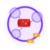
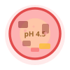

Host–Pathogen Trafficking Hub
Understanding how intracellular pathogens remodel host membranes and vesicular trafficking — from phagocytosis to phagosome evasion.
Concept Foundation
Core Vocabulary
A precise shared vocabulary is the entry point to mechanistic reasoning about host–pathogen dynamics.
Phagocytosis
The process by which host cells (e.g., macrophages, neutrophils) engulf large particles (>0.5 µm), including bacteria, dead cells, and debris, via actin-driven membrane extension and remodeling.
Phagosome
The membrane-bound vacuole formed around an engulfed particle. Its fate — degradation or pathogen survival — is determined by the sequential acquisition of vesicular markers during maturation.
Phagolysosome
The mature phagosome after fusion with lysosomes. Characterized by acidic pH (~4.5–5), hydrolytic enzymes (cathepsins, lipases), and reactive oxygen species — the terminal degradative compartment.
Rab GTPases
A family of small GTPases that define vesicular identity and regulate docking/fusion specificity. Rab5 marks early endosomes; Rab7 marks late endosomes. Pathogens manipulate Rab switching to redirect their fate.
LAMP1
Lysosomal-Associated Membrane Protein 1. A canonical late endosomal/lysosomal marker. LAMP1 acquisition on a phagosome signals progression toward phagolysosome maturation. Its absence indicates evasion.
Intracellular Trafficking
The tightly regulated network of vesicle budding, transport, and fusion events that moves membrane cargo between organelles. Governed by Rab GTPases, SNAREs, coat proteins (COPI, COPII, clathrin), and phosphoinositides.
Canonical Trafficking Pathway


Pathogen Profiles
Five Intracellular Pathogens
Click any card to reveal deeper mechanistic insights. Each pathogen has evolved a distinct strategy to subvert host trafficking.
- Entry Trigger/ruffle mechanism via SPI-1 T3SS effectors (SopE, SipA); induces actin rearrangement in non-phagocytes
- Trafficking Resides in Salmonella-Containing Vacuole (SCV); blocks phagosome–lysosome fusion via SPI-2 effectors
- Hijacks Rab5, Rab7, and late endosomal sorting; recruits ER- and TGN-derived membranes to the SCV
- Entry Zipper mechanism via InlA/InlB binding to E-cadherin and Met receptor, triggering PI3K and Rac1 signaling
- Trafficking Escapes the phagosome into cytosol within ~30 min using LLO (listeriolysin O) pore-forming toxin
- Hijacks Host actin polymerization (ActA/Arp2/3) for cytoplasmic motility and cell-to-cell spread
- Entry Complement receptor (CR3) and mannose receptor-mediated phagocytosis — bypasses classical FcR-triggered antimicrobial signaling
- Trafficking Arrests phagosome at early stage; blocks Rab7 acquisition and PI3P turnover, preventing lysosomal fusion
- Hijacks Host PI3-kinase signaling; SapM phosphatase degrades PI3P to prevent Rab5→Rab7 maturation switch
- Entry Coiling phagocytosis or conventional phagocytosis; hijacks the process before phagosome sealing is complete
- Trafficking Creates Legionella-Containing Vacuole (LCV) that recruits ER-derived vesicles via Dot/Icm T4SS effectors, bypassing endocytic pathway entirely
- Hijacks ER-to-Golgi secretory pathway; Rab1 GEF activity; intercepts COPI/COPII vesicles
- Entry Trigger mechanism: IpaB/IpaC T3SS translocon drives massive membrane ruffling and macropinocytic-like uptake into colonic epithelial cells
- Trafficking Rapid phagosome lysis (<15 min) via IpaB pore-forming activity; escapes to cytosol before early phagosome markers are fully acquired
- Hijacks Host actin (via IcsA/VirG-Arp2/3) for motility; intercepts septin cage autophagy evasion pathways
Phagosome Maturation
Stage-by-Stage Timeline
Click any stage to reveal key molecular markers, functional changes, and how pathogens target that transition.
Microscopy
What Microscopy Reveals
Fluorescence microscopy is the primary tool for tracking phagosome maturation and pathogen compartmentalization in living or fixed cells.
Widefield Fluorescence
Uses a broad illumination field to excite all fluorophores in the sample simultaneously. Fast and high-throughput, but includes out-of-focus blur from above and below the focal plane. Suitable for endpoint assays and counting colocalization events across many cells.
Confocal Microscopy
Uses a pinhole aperture to reject out-of-focus light, producing optical sections at defined z-depths. Essential for resolving compartment boundaries, membrane-tethered proteins, and 3D reconstruction of phagosome–organelle contacts.
Fluorescence Tagging
Rab GTPases and membrane markers (LAMP1, EEA1) are tagged with fluorescent proteins (GFP, mCherry, mNeonGreen) or detected via primary/secondary antibody staining. GFP-Rab5 marks early phagosomes; GFP-Rab7 marks the maturation transition.
Colocalization Analysis
Quantified using Pearson's correlation coefficient or Manders' coefficients between two fluorescence channels. A high overlap coefficient between the pathogen channel and LAMP1 indicates lysosomal fusion; low overlap indicates evasion. Use Costes threshold to reduce noise bias.
Reading the Data: Interpretation Examples
Research Inspiration
Inspired by Foundational Work
Mauricio Terebiznik Lab · University of Toronto Scarborough
This site is inspired by research on host–pathogen interactions and intracellular trafficking in labs such as Mauricio Terebiznik's at the University of Toronto Scarborough. The Terebiznik laboratory investigates how intracellular pathogens — particularly Helicobacter pylori and Salmonella — remodel host cell membranes, co-opt vesicular trafficking machinery, and survive within phagocytic compartments. Their work bridges quantitative fluorescence imaging with cell biology and microbial pathogenesis.
Visit Lab Page ↗